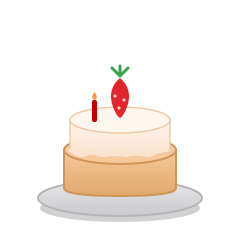
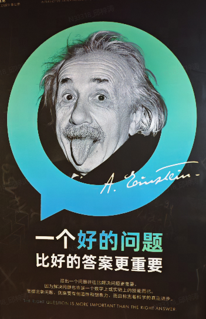

从 5/8 的 2.03% 到 5/27 的 4.88%，闲聊能力、提示词优化每一次迭代都带来肉眼可见的跃升 —— 但距离天花板，我们才走了不到 1/9。
💡 一句话：embedding 把「语言」翻译成机器能算的「坐标」。理解了它，就理解了 chatbot 为什么有时聪明、有时犯傻。
一个产品问题，一半在技术，一半在人。

基础资源是一样的，思路与方法不同，结果完全不同 —— 这就是产品运营的价值。
核心理念：没有卡点就自动流转，有"堵车"（准确率低/有风险/需抉择）才提醒人介入。
过去我们一直问："怎么让话术更准？" 但真正该问的也许是：
"客服到底需要什么样的辅助？""我们用什么指标衡量它真的有用？"

比拼怎么解题 —— 更强的模型、更高的准确率、更好的话术。
比拼定义对的问题 —— 该解决什么、怎么衡量价值、如何重塑人与 AI 的协作。
姚顺雨说，AI 的下半场，瓶颈不再是"能不能做到"，而是"做什么、怎么定义成功"。
chatbot 的下半场，不是更准的话术，而是 —— 重新定义客服与机器的关系。
提问 · 讨论 · 一起把最后一环做扎实